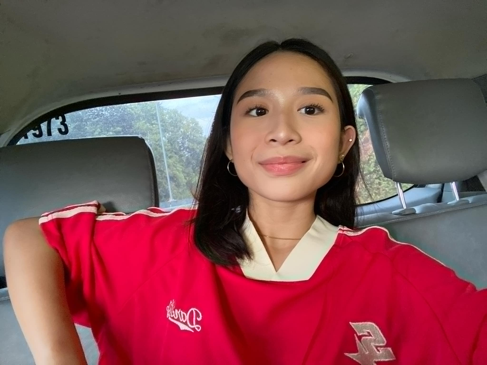

Executive Virtual Assistant
Background:
I am a hardworking and responsible person who always does my best in everything I do. As the only daughter in my family, I learned early how to be strong, independent, and reliable. I manage responsibilities at home while focusing on my studies, which helped me become organized and disciplined.
Educational Background:
I am currently studying INFORMATION TECHNOLOGY MAJOR IN HEALTH. I have learned important skills like time management, communication, and using basic digital tools.
Mission & Vision:
My mission is to provide reliable and quality support to clients. I want to help them save time and make their work easier. My vision is to become a trusted Virtual Assistant.
Goals & Motivation:
I am motivated by my family and my desire to succeed. My goal is to grow my skills, gain experience, and build a stable career.
Key Achievements:
I consistently complete my school tasks on time and stay organized even under pressure. I am proud of balancing my responsibilities at home and school.
Technical Skills:
Data Entry, Online Research, Email Management, Calendar Management
Software Proficiency:
Google Docs, Microsoft Word, Excel, Canva
Soft Skills:
Communication, Time Management, Attention to Detail, Responsibility
Services:
Social Media Support, Admin Tasks, Project Organization
Student Work / Personal Experience
- Organized school tasks and deadlines
- Managed schedules and responsibilities
- Assisted in group projects
Email: your@email.com
LinkedIn: lhttps://github.com/Paulay06/Paulay06.github.io/tree/maininkedin.com/in/yourname
Download Resume